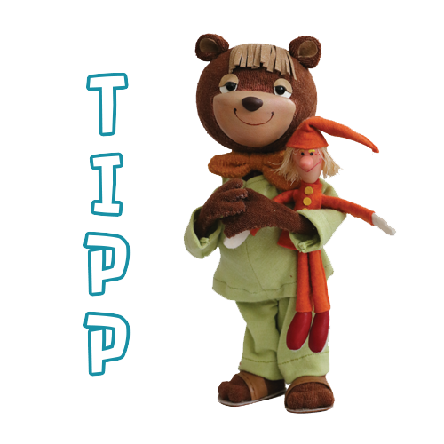

Tv Maci
A TV Maci levette a papucsát és élvezte, ahogy a fűszálak cirógatják a lábujjait. Egész hosszan álldogált így: addig, míg rá nem esteledett. Aztán pontban 19:20-kor úgy érezte, ideje, hogy kerítsen magának egy ________________________t.
A TV Maci levette a papucsát és élvezte, ahogy a fűszálak cirógatják a lábujjait. Egész hosszan álldogált így: addig, míg rá nem esteledett. Aztán pontban 19:20-kor úgy érezte, ideje, hogy kerítsen magának egy ________________________t.